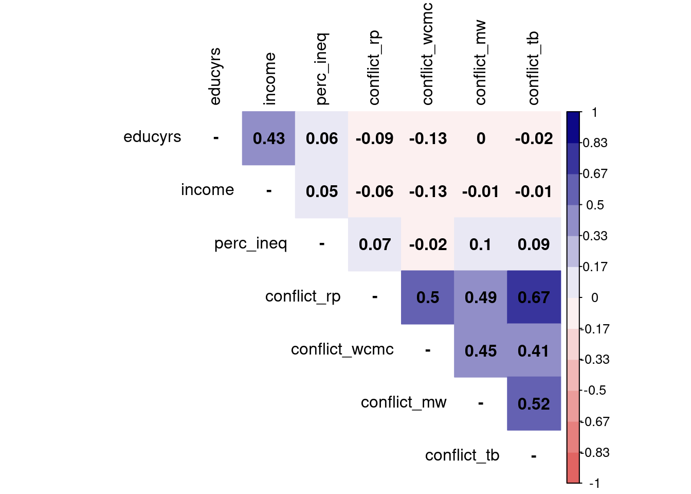

pacman::p_load(tidyverse, # Manipulacion datos
sjPlot, # Graficos y tablas
sjmisc, # Descriptivos
corrplot, # Correlaciones
psych, # Test estadísticos
kableExtra) # Tablas
options(scipen = 999) # para desactivar notacion cientifica
rm(list = ls()) # para limpiar el entorno de trabajoPráctico 4: Matrices de correlación, casos pérdidos e índices
Sesión del martes, 8 de octubre de 2024
Objetivo de la práctica
El objetivo de esta guía práctica es conocer maneras de reportar coeficientes de correlación y otras medidas de correlación para variables ordinales. Además, nos introduciremos en el tratamiento de valores perdidos y generación de índices. Todo ello a partir de una pregunta de investigación empírica.
En detalle, aprenderemos a:
- Estimar e interpretar coeficientes de correlación de Spearman y Kendall
- Generar y reportar matrices de correlación
- Tratamiento de casos perdidos
- Analizar baterías de indicadores y generar índices
Utilizaremos un ejemplo que desarrollaremos progresivamente para ilustrar cada paso. Al finalizar, se propondrá un ejercicio autónomo que deberá resolverse de manera individual o grupal.
1. Pregunta de investigación
El aumento de la desigualdad económica y la concentración de la riqueza se han vinculado al resurgimiento de diversos conflictos sociales a nivel global. En este contexto, varios estudios han explorado en qué medida los individuos perciben conflictos sociales entre grupos, especialmente aquellos organizados verticalmente, como ricos-pobres o trabajadores-empresarios (cf. Edlund & Lindh, 2015; Hadler, 2015).
La investigación ha demostrado que las percepciones de conflicto social se asocian tanto a desigualdades objetivas como subjetivas. Por un lado, en países más desiguales y entre personas de menor estatus socioeconómico, estas percepciones tienden a ser mayores (Edlund & Lindh, 2015). Por otro lado, quienes se ubican en posiciones más bajas de la estructura social perciben más conflictos, siendo estas percepciones influenciadas por la percepción de desigualdad económica (Hadler, 2015; Hertel & Schöneck, 2019).
Sin embargo, en la literatura aún no se ha analizado cómo la percepción de desigualdad afecta las percepciones de conflicto social ni se ha examinado la consistencia de los indicadores utilizados para medirlas. Estas preguntas las responderemos estudiando el caso de Chile, un país que se caracteriza por sus altos niveles de desigualdad y concentración de la riqueza (Chancel, et al. 2022).
Pregunta 1: ¿En qué medida se relacionan la percepción de desigualdad y la percepción de conflictos sociales en Chile?
Pregunta 2: ¿Cómo se relacionan los distintos indicadores utilizados para medir la percepción de conflictos sociales?
Recursos de la práctica
En esta práctica trabajaremos con un subconjunto de datos previamente procesados derivados de las encuesta del Modulo de Desigualdad Social de la International Social Survey Programme (ISSP) para Chile del año 2009. Para este ejercicio, obtendremos directamente esta base desde internet. No obstante, también es posible acceder a la misma información a través del siguiente enlace: ISSP Chile 2009. Desde allí, podrás descargar el archivo que contiene el subconjunto procesado de la base de datos ISSP 2009 para Chile.
1. Preparación de datos
Comencemos por preparar nuestros datos. Iniciamos cargando las librerías necesarias.
Cargamos los datos directamente desde internet.
# Cargar bbdd desde internet
load(url("https://github.com/cursos-metodos-facso/datos-ejemplos/raw/refs/heads/main/issp_2009_chile.RData"))A continuación, exploramos la base de datos issp.
names(issp) # Nombre de columnas [1] "sex" "age" "educyrs" "income"
[5] "topbot" "pref_redis" "perc_ineq" "conflict_rp"
[9] "conflict_wcmc" "conflict_mw" "conflict_tb" dim(issp) # Dimensiones[1] 1505 11Contamos con 11 variables (columnas) y 1505 observaciones (filas).
Ahora, realizaremos un pequeño procesamiento de nuestros datos con dplyr, todo de una vez mediante el uso de pipes %>%. Para recordar los pasos para el procesamiento de datos, revisar el curso anterior.
proc_issp <- issp %>% # seleccionamos
dplyr::select(educyrs,
income,
topbot,
perc_ineq,
starts_with("conflict")) Ahora, exploremos estadísticos descriptivos de nuestra base procesada proc_issp
proc_issp %>%
sjmisc::descr(show = c("label","range", "mean", "sd", "NA.prc", "n")) %>%
kable(.,"markdown")| var | label | n | NA.prc | mean | sd | range | |
|---|---|---|---|---|---|---|---|
| 5 | educyrs | Nivel educativo | 1451 | 3.5880399 | 10.762922 | 4.4097420 | 24 (1-25) |
| 6 | income | Decil ingreso | 1146 | 23.8538206 | 5.489529 | 2.8723002 | 9 (1-10) |
| 8 | topbot | Estatus social subjetivo | 1490 | 0.9966777 | 4.025503 | 1.6599884 | 9 (1-10) |
| 7 | perc_ineq | Percepción desigualdad | 1492 | 0.8637874 | 4.188338 | 0.8271374 | 4 (1-5) |
| 2 | conflict_rp | Conflictos: ricos - pobres | 1438 | 4.4518272 | 1.613352 | 0.8665370 | 3 (0-3) |
| 4 | conflict_wcmc | Conflictos: clase trabajadora - clase media | 1426 | 5.2491694 | 1.289621 | 0.8965377 | 3 (0-3) |
| 1 | conflict_mw | Conflictos: directivos - trabajadores | 1427 | 5.1827243 | 1.714085 | 0.8304120 | 3 (0-3) |
| 3 | conflict_tb | Conflictos: gente de arriba - gente de abajo | 1425 | 5.3156146 | 1.661754 | 0.9044854 | 3 (0-3) |
Vamos con nuestros análisis para responder nuestras preguntas, pero antes…
2. Entonces, ¿qué técnica usar?
Nota
Pregunta 1: Dado que las variables de percepción de conflictos y percepción de desigualdad son de nivel de medición ordinal, podemos estimar su asociación con coeficientes de correlación para variables ordinales.
Pregunta 2: Podemos estimar una matriz de correlaciones entre las variables de percepción de conflictos tratando los casos pérdidos. Luego, podemos estimar la consistencia interna (alpha de Cronbach) para generar un índice promedio.
3. Correlación de Spearman y Kendall
Coeficiente de correlación de Spearman
Cuando queremos conocer la asociación entre variables que son ordinales y/o cuando nuestras variables no cumplen con los supuestos de distribución normal, podemos utilizar la correlación de Spearman.
- Emplea rangos en lugar de valores numéricos para evaluar la relación.
- Es alta cuando las observaciones tienen un ranking similar.
En R calcularlo es sencillo, pero debemos tener en cuenta que las variables que relacionemos tengan un orden de rango similar: por ejemplo, que el valor más bajo sea el rango más bajo y que el valor más alto sea el rango más alto.
Observemos las frecuencias de las variables conflict_rp (conflictos ricos-pobres) y perc_ineq (percepción desigualdad)
sjmisc::frq(proc_issp$conflict_rp)Conflictos: ricos - pobres (x) <numeric>
# total N=1505 valid N=1438 mean=1.61 sd=0.87
Value | N | Raw % | Valid % | Cum. %
--------------------------------------
0 | 161 | 10.70 | 11.20 | 11.20
1 | 442 | 29.37 | 30.74 | 41.93
2 | 627 | 41.66 | 43.60 | 85.54
3 | 208 | 13.82 | 14.46 | 100.00
<NA> | 67 | 4.45 | <NA> | <NA>sjmisc::frq(proc_issp$perc_ineq)Percepción desigualdad (x) <numeric>
# total N=1505 valid N=1492 mean=4.19 sd=0.83
Value | N | Raw % | Valid % | Cum. %
--------------------------------------
1 | 16 | 1.06 | 1.07 | 1.07
2 | 65 | 4.32 | 4.36 | 5.43
3 | 105 | 6.98 | 7.04 | 12.47
4 | 742 | 49.30 | 49.73 | 62.20
5 | 564 | 37.48 | 37.80 | 100.00
<NA> | 13 | 0.86 | <NA> | <NA>Ahora, calculemos el coeficiente de correlación de Spearman con cor.test.
cor.test(proc_issp$conflict_rp, proc_issp$perc_ineq, method = "spearman") #especificamos metodo spearman
Spearman's rank correlation rho
data: proc_issp$conflict_rp and proc_issp$perc_ineq
S = 430911455, p-value = 0.000008055
alternative hypothesis: true rho is not equal to 0
sample estimates:
rho
0.1176912 Ahora conocemos el valor del coeficiente de Spearman mediante al argumento rho, que es igual a 0.12, siendo positivo y pequeño según los criterios de Cohen (1988).
Coeficiente de correlación Tau de Kendall
Recomendado cuando hay un set de datos pequeños y/o cuando hay mucha repetición de observaciones en el mismo ranking. Se basa en una comparación de pares de observaciones concordantes y discordantes.
Ahora, calculemos el coeficiente de correlación Tau de Kendall con cor.test.
cor.test(proc_issp$conflict_rp, proc_issp$perc_ineq, method = "kendall") #especificamos metodo kendall
Kendall's rank correlation tau
data: proc_issp$conflict_rp and proc_issp$perc_ineq
z = 4.4558, p-value = 0.000008358
alternative hypothesis: true tau is not equal to 0
sample estimates:
tau
0.1043735 El valor del coeficiente de Kendall mediante al argumento tau, es igual a 0.1, siendo positivo y muy pequeño según los criterios de Cohen (1988).
¿PERO QUÉ HACER CON LOS CASOS PÉRDIDOS?
4. Tratamiento de casos perdidos
Trabajar con datos a menudo implica enfrentar valores perdidos (NA), lo que puede ser un gran desafío. Estos valores indican la ausencia de un valor en una base de datos. Los valores perdidos pueden originarse por diversas razones, como el sesgo de no respuesta en encuestas, errores en la entrada de datos o simplemente la falta de información para ciertas variables.
| X1 | X2 | X3 | X4 |
|---|---|---|---|
| NA | 4 | 1 | Hola |
| 7 | 1 | 4 | No soy un NA |
| 8 | NA | 2 | NA |
| 9 | NA | 9 | Amo R |
| 3 | 3 | 6 | NA |
La presencia de valores perdidos puede tener un impacto considerable en la precisión y confiabilidad de los análisis estadísticos, lo que a su vez puede conducir a resultados sesgados y conclusiones incorrectas.
Existen varias formas de tratar valores perdidos, que van desde enfoques simples hasta métodos más complejos, como la imputación. En esta ocasión, nos centraremos en las dos estrategias más comunes:
- trabajar exclusivamente con casos completos (listwise) o
- retener los casos con valores perdidos, pero excluyéndolos al calcular estadísticas (pairwise).
a) Analísis con casos completos: listwise deletion
Este enfoque es uno de los más conocidos: implica remover completamente las observaciones que tienen valores perdidos en cualquier variable de interés. En otras palabras, si una fila/caso en un conjunto de datos tiene al menos un valor faltante en alguna de las variables que estás considerando, se eliminará por completo.
En R, esto podemos hacerlo con la función na.omit. Para hacer esto, sigamos estos pasos:
- respaldar la base de datos original en el espacio de trabajo (por si queremos en adelante realizar algún análisis referido a casos perdidos)-
- contamos el número de casos con el comando
dim. - contamos cuántos y en dónde tenemos casos perdidos.
- borramos los casos perdidos con
na.omit. - contamos nuevamente con
dimpara asegurarnos que se borraron.
proc_issp_original <- proc_issp
dim(proc_issp)[1] 1505 8sum(is.na(proc_issp))[1] 745colSums(is.na(proc_issp)) educyrs income topbot perc_ineq conflict_rp
54 359 15 13 67
conflict_wcmc conflict_mw conflict_tb
79 78 80 proc_issp <- na.omit(proc_issp)
dim(proc_issp)[1] 1021 8Ahora nos quedamos con 1021 observaciones sin casos perdidos.
Aunque simple de implementar, con este enfoque podemos perder información importante, especialmente si los valores perdidos no se distribuyen aleatoriamente.
Siempre hay que intentar rescatar la mayor cantidad de casos posibles. Por lo tanto, si un listwise genera más de un 10% de casos perdidos se debe detectar qué variables esta produciendo esta pérdida e intentar recuperar datos. Puedes revisar un ejemplo aquí.
b) Retener pero excluir: pairwise deletion
A diferencia del anterior, este es un enfoque en el que las observaciones se utilizan para el análisis siempre que tengan datos disponibles para las variables específicas que se están analizando. En lugar de eliminar toda una fila si falta un valor, se eliminan solo los valores faltantes en las variables que se están analizando en ese momento.
Para hacer esto en R debemos siempre verificar e indicar en nuestro código si queremos (o no) remover los NA para realizar los análisis.
mean(proc_issp_original$conflict_rp); mean(proc_issp_original$perc_ineq)[1] NA[1] NAmean(proc_issp_original$conflict_rp, na.rm = TRUE); mean(proc_issp_original$perc_ineq, na.rm = TRUE)[1] 1.613352[1] 4.188338Con el primer código no obtuvimos información sustantiva en ciertas variables, pero con el segundo sí al remover los NA solo de dicha variable para un cálculo determinado.
5. Matrices de correlación
La correlación es una estimación de asociación de dos variables. Sin embargo, en los análisis de bases de datos usualmente se exploran asociaciones entre múltiples pares de variables, lo que genera una matriz de correlación. En una matriz, las variables se presentan en las filas y las columnas, y en las celdas donde se cruzan los pares de variables se muestra su coeficiente de correlación.
En su forma simple en R se aplica la función cor a la base de datos, y la guardamos en un objeto que le damos el nombre M para futuras operaciones:
M <- cor(proc_issp_original, use = "complete.obs")
M educyrs income topbot perc_ineq conflict_rp
educyrs 1.00000000 0.429527855 0.40464701 0.05369064 -0.08653773
income 0.42952785 1.000000000 0.31867065 0.05266991 -0.06233270
topbot 0.40464701 0.318670648 1.00000000 -0.04046890 -0.09543086
perc_ineq 0.05369064 0.052669910 -0.04046890 1.00000000 0.07244029
conflict_rp -0.08653773 -0.062332705 -0.09543086 0.07244029 1.00000000
conflict_wcmc -0.13270803 -0.127695665 -0.10271518 -0.02023346 0.49981470
conflict_mw -0.00320080 -0.009719637 -0.08839869 0.09639380 0.49465050
conflict_tb -0.01935586 -0.006374423 -0.07742800 0.09545628 0.66631094
conflict_wcmc conflict_mw conflict_tb
educyrs -0.13270803 -0.003200800 -0.019355856
income -0.12769567 -0.009719637 -0.006374423
topbot -0.10271518 -0.088398687 -0.077427998
perc_ineq -0.02023346 0.096393796 0.095456283
conflict_rp 0.49981470 0.494650501 0.666310943
conflict_wcmc 1.00000000 0.448317804 0.413692854
conflict_mw 0.44831780 1.000000000 0.524011301
conflict_tb 0.41369285 0.524011301 1.000000000Este es el reporte simple, pero no muy amigable a la vista. Para una versión más reportable, utilizamos la funcion tab_corr.
sjPlot::tab_corr(proc_issp_original,
triangle = "lower")| Nivel educativo | Decil ingreso | Estatus social subjetivo | Percepción desigualdad | Conflictos: ricos - pobres | Conflictos: clase trabajadora - clase media |
Conflictos: directivos - trabajadores | Conflictos: gente de arriba - gente de abajo |
|
| Nivel educativo | ||||||||
| Decil ingreso | 0.430*** | |||||||
| Estatus social subjetivo | 0.405*** | 0.319*** | ||||||
| Percepción desigualdad | 0.054 | 0.053 | -0.040 | |||||
| Conflictos: ricos - pobres | -0.087** | -0.062* | -0.095** | 0.072* | ||||
| Conflictos: clase trabajadora - clase media |
-0.133*** | -0.128*** | -0.103** | -0.020 | 0.500*** | |||
| Conflictos: directivos - trabajadores | -0.003 | -0.010 | -0.088** | 0.096** | 0.495*** | 0.448*** | ||
| Conflictos: gente de arriba - gente de abajo |
-0.019 | -0.006 | -0.077* | 0.095** | 0.666*** | 0.414*** | 0.524*** | |
| Computed correlation used pearson-method with listwise-deletion. | ||||||||
La distinción entre listwise y pairwise es relevante al momento de estimar matricies de correlación, donde esta decisión debe estar claramente explicitada y fundamentada. En ejemplo de tabla anterior usamos listwise que es el argumento por defecto (y nos lo indica al final de la tabla).
Veamos como hacerlo con pairwise:
sjPlot::tab_corr(proc_issp_original,
na.deletion = "pairwise", # espeficicamos tratamiento NA
triangle = "lower")| Nivel educativo | Decil ingreso | Estatus social subjetivo | Percepción desigualdad | Conflictos: ricos - pobres | Conflictos: clase trabajadora - clase media |
Conflictos: directivos - trabajadores | Conflictos: gente de arriba - gente de abajo |
|
| Nivel educativo | ||||||||
| Decil ingreso | 0.429*** | |||||||
| Estatus social subjetivo | 0.402*** | 0.326*** | ||||||
| Percepción desigualdad | 0.057* | 0.041 | -0.034 | |||||
| Conflictos: ricos - pobres | -0.068* | -0.057 | -0.094*** | 0.087*** | ||||
| Conflictos: clase trabajadora - clase media |
-0.139*** | -0.122*** | -0.118*** | -0.025 | 0.518*** | |||
| Conflictos: directivos - trabajadores | -0.016 | -0.005 | -0.079** | 0.100*** | 0.499*** | 0.438*** | ||
| Conflictos: gente de arriba - gente de abajo |
-0.037 | 0.007 | -0.076** | 0.089*** | 0.651*** | 0.441*** | 0.527*** | |
| Computed correlation used pearson-method with pairwise-deletion. | ||||||||
Con esta mejor visualización, algunas observaciones sobre la matriz de correlaciones:
- En esta matriz las variables están representadas en las filas y en las columnas.
- Cada coeficiente expresa la correlación de una variable con otra. Por ejemplo, la correlación entre la variable de
educyrsyincomees 0.43. - La información de cada coeficiente se repite sobre y bajo la diagonal, ya que es el mismo par de variables pero en el orden alterno. Por convención en general se omiten las correlaciones redundantes sobre la diagonal, por eso aparece en blanco.
- En la diagonal corresponde que todos los coeficientes sean 1, ya que la correlación de una variable consigo misma es perfectamente positiva.
Otra manera de presentar matrices de correlación es mediante gráficos. Veamos un ejemplo con la función corrplot de la librería corrplot sobre nuestra matriz M ya creada.
diag(M) <- NA
corrplot::corrplot(M,
method = "color",
addCoef.col = "black",
type = "upper",
tl.col = "black",
col = colorRampPalette(c("#E16462", "white", "#0D0887"))(12),
bg = "white",
na.label = "-") 
6. Baterías e índices
En la literatura sobre percepción de conflictos se suele utilizar un índice sumativo o promedio entre los distintos indicadores sobre conflictos percibidos: conflict_rp,conflict_wcmc,conflict_mw,conflict_tb.
Entonces, para poder responder nuestras preguntas de investigación, primero generaremos una matriz de correlaciones entre estos indicadores, luego evaluaremos su consistencia y generaremos el índice psci. Finalmente, realizaremos un test de correlación para examinar la asociación entre psci y perc_ineq.
M_psci <- proc_issp %>%
dplyr::select(starts_with("conflict"))
sjPlot::tab_corr(M_psci,
na.deletion = "listwise", # espeficicamos tratamiento NA
triangle = "lower")| Conflictos: ricos - pobres | Conflictos: clase trabajadora - clase media |
Conflictos: directivos - trabajadores | Conflictos: gente de arriba - gente de abajo |
|
| Conflictos: ricos - pobres | ||||
| Conflictos: clase trabajadora - clase media |
0.500*** | |||
| Conflictos: directivos - trabajadores | 0.495*** | 0.448*** | ||
| Conflictos: gente de arriba - gente de abajo |
0.666*** | 0.414*** | 0.524*** | |
| Computed correlation used pearson-method with listwise-deletion. | ||||
Los ítems se correlacionan de manera positiva y con tamaños de efecto moderados y altos para las ciencias sociales. Con ello, podemos pasar a evaluar sus relaciones tienen consistencia interna.
alpha_psci <- psych::alpha(M_psci)
alpha_psci$total$raw_alpha[1] 0.8043218De acuerdo con este resultado, el alpha de Cronbach reflejado en el raw_alpha del output es superior al estandar de 0.6 en ciencias sociales, por lo que se sostiene su consistencia.
Ahora, generemos el índice psci
proc_issp <- cbind(proc_issp, "psci" = rowMeans(proc_issp %>% select(starts_with("conflict")), na.rm=TRUE))
sjmisc::descr(proc_issp$psci, show = c("range", "mean", "sd", "NA.prc", "n")) %>%
kable(.,"markdown")| var | n | NA.prc | mean | sd | range |
|---|---|---|---|---|---|
| dd | 1021 | 0 | 1.584966 | 0.6986975 | 3 (0-3) |
7. Respuesta a la pregunta de investigación
Pregunta 1
¿En qué medida se relacionan la percepción de desigualdad y la percepción de conflictos sociales en Chile?
Realicemos la prueba estadística correspondiente.
cor.test(proc_issp$psci, proc_issp$perc_ineq, method = "pearson", use = "complete.obs")
Pearson's product-moment correlation
data: proc_issp$psci and proc_issp$perc_ineq
t = 2.4371, df = 1019, p-value = 0.01497
alternative hypothesis: true correlation is not equal to 0
95 percent confidence interval:
0.01484301 0.13683850
sample estimates:
cor
0.07612564 De acuerdo a este resultado, la correlación de Pearson entre la percepción de conflicto social y la percepción de desigualdad es positiva, muy pequeña y estadisticamente significativa (\(r\) = 0.08, \(p\) < 0.05).
Pregunta 2
¿Cómo se relacionan los distintos indicadores utilizados para medir la percepción de conflictos sociales?
De acuerdo al resultado de la matriz de correlaciones y del alpha de Cronbach, los indicadores utilizados para medir la percepción de conflictos se relacionan positiva y significativamente (\(p\) < 0.05), además de demostrar un nivel de consistencia interna aceptable (\(\alpha\) = 0.8).
Ejercicio autónomo
A partir de la base de datos de proc_issp responda la siguiente pregunta ¿en qué medida la percepción de conflictos se asocia con el estatus socioeconomico de las personas Para responder esta pregunta siga los siguientes pasos:
- Estime y reporte una matriz de correlación con las variables
incomeyeducyrs. Considere el tratamiento de casos perdidos - Calcule el alpha de cronbach de la matriz del punto anterior
- Genere un índice promedio de estatus socioeconomico y llámelo
ses - Calcule el coeficiente de correlación de Pearson (\(r\)) entre las variables
psciyses. Reporte e interprete sus resultados.